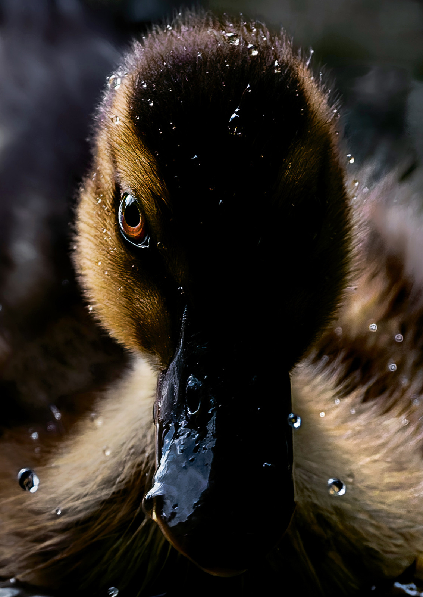
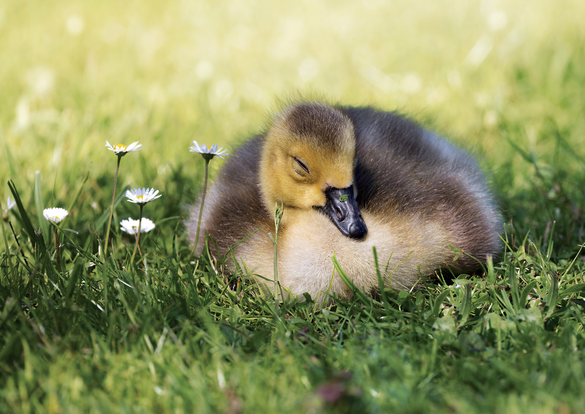
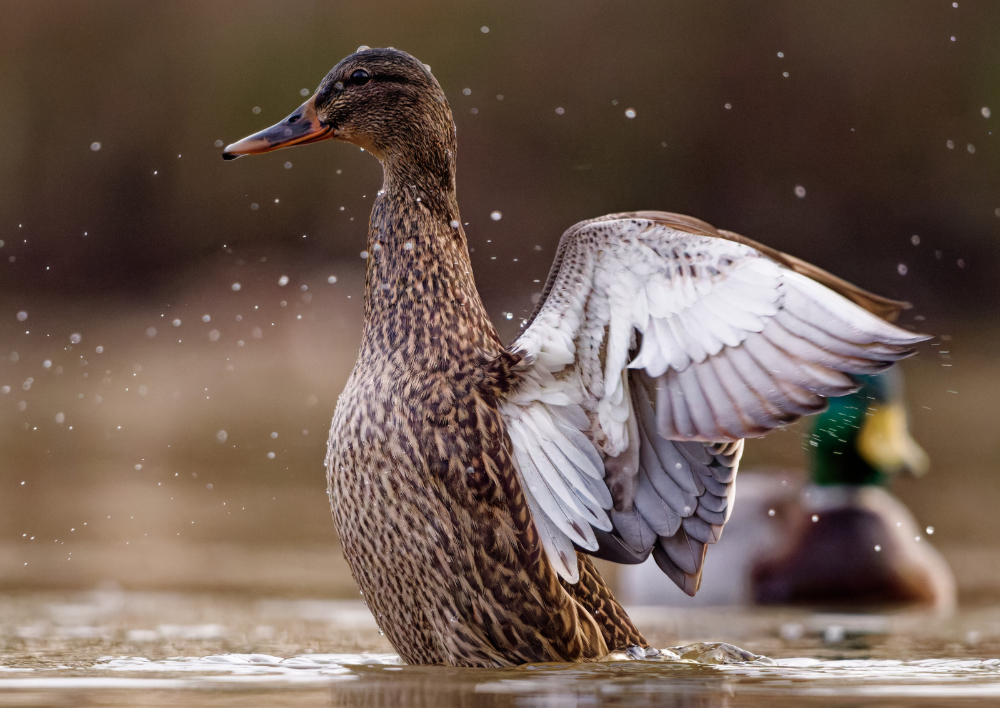
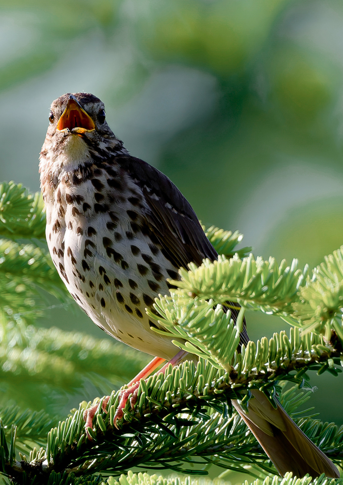
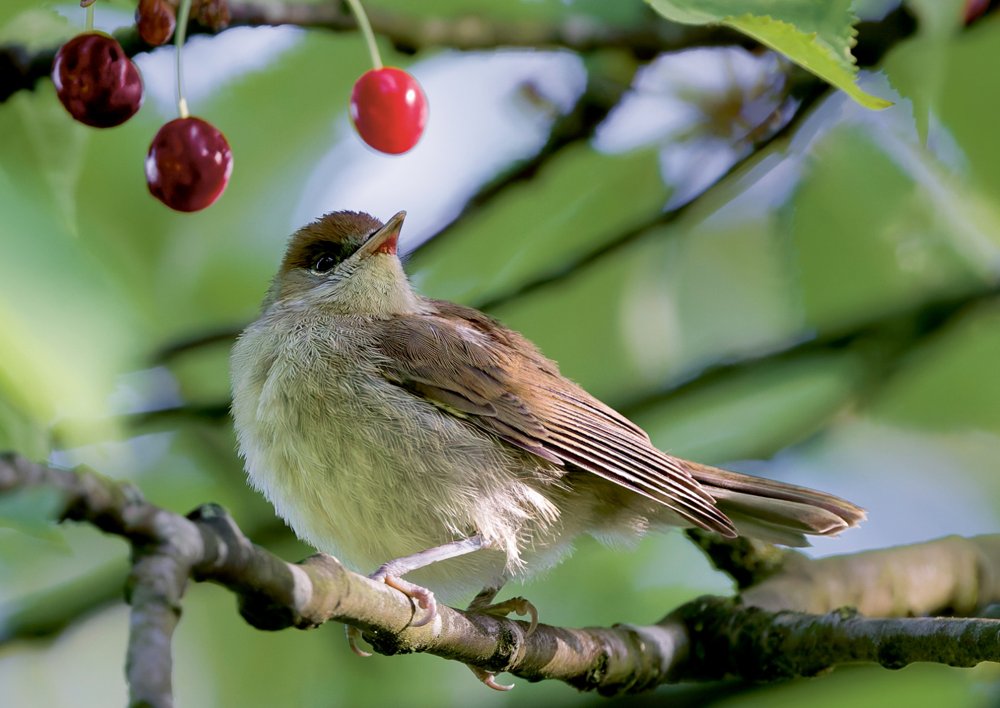
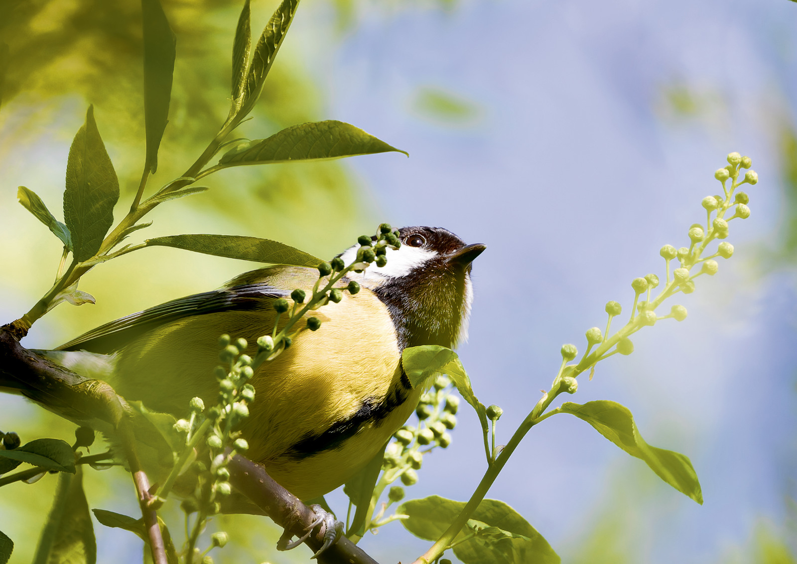
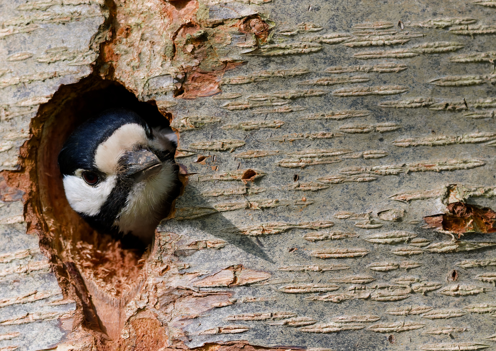
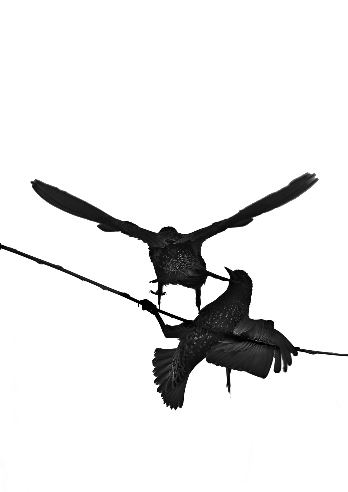
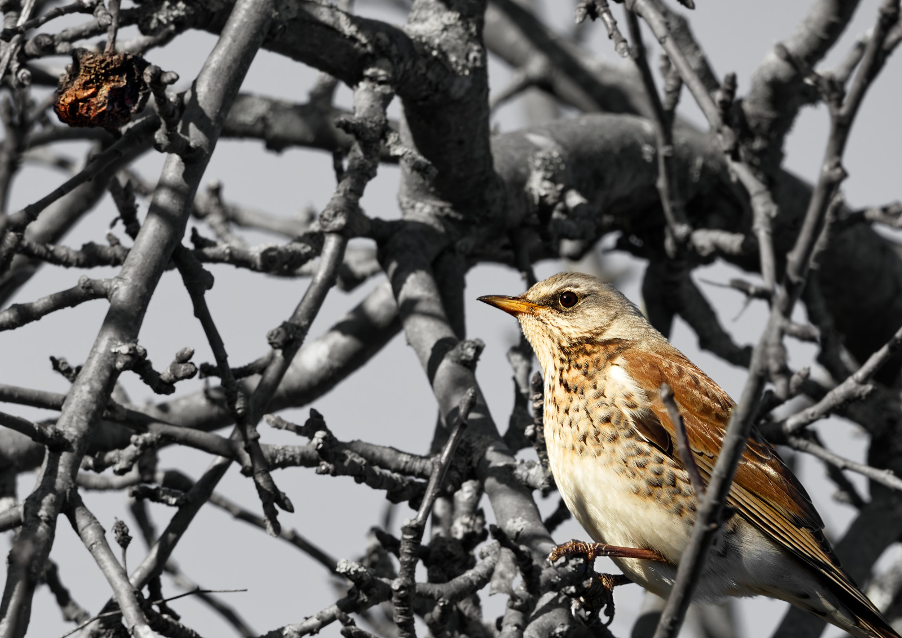
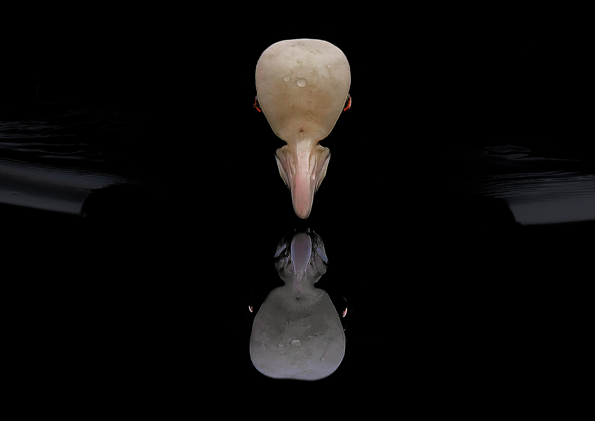

Teichleben
Schwimmend, putzend, schlafend — das Leben am kühlen Gewässer nebenan.

Entenküken · Nahaufnahme
Gänseküken · bei Gänseblümchen
Stockente · FlügelzauberGartenleben
Rotkehlchen, Meisen, Gimpel & Co. im Wechsel der Jahreszeiten.

Singdrossel · grüner Gesang
Mönchgrasmücke · Frühlingssnack
Kohlmeise · frech verstecktWaldleben
Eichhörnchen, Specht & Co. im grünen Lebensraum.
Eichhörnchen · planend

Buntspecht · aus Baumhöhle Eichhörnchen · in sich ruhend
Eichhörnchen · in sich ruhendReduktion — Natur neu betrachtet
Echte Naturfotografie, reduziert, neu interpretiert und bewusst anders gesehen.

Star-Silhouette · Reduktion und Detail
Singdrossel · der letzte Apfel
Blässhuhn · dunkle Spiegelung